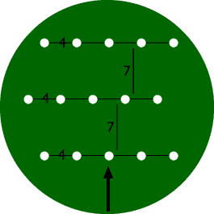

Park Effect

As we saw in the previous section on the wake
effect, each wind turbine will slow down the wind behind
it as it pulls energy out of the wind and converts it to electricity.
 Ideally, we would therefore like to space
turbines as far apart as possible in the prevailing
wind direction. On the other hand, land use and the cost
of connecting wind turbines to the electrical grid would tell
us to space them closer together.
Ideally, we would therefore like to space
turbines as far apart as possible in the prevailing
wind direction. On the other hand, land use and the cost
of connecting wind turbines to the electrical grid would tell
us to space them closer together.
Park
Layout
As a rule of
thumb, turbines in wind parks are usually spaced somewhere between
5 and 9 rotor diameters apart in the prevailing wind direction,
and between 3 and 5 diameters apart in the direction perpendicular
to the prevailing winds.
 In this picture we have placed three rows
of five turbines each in a fairly typical pattern.
In this picture we have placed three rows
of five turbines each in a fairly typical pattern.
 The turbines (the white dots) are placed
7 diameters apart in the prevailing wind direction, and 4 diameters
apart in the direction perpendicular to the prevailing winds.
The turbines (the white dots) are placed
7 diameters apart in the prevailing wind direction, and 4 diameters
apart in the direction perpendicular to the prevailing winds.
Energy
Loss from the Park Effect
With knowledge of thewind turbine rotor, the wind
rose, the Weibull distribution
and the roughness in the different directions
manufacturers or developers can calculate the energy loss due
to wind turbines shading one another.
 Typically, the energy loss will be somewhere
around 5 per cent.
Typically, the energy loss will be somewhere
around 5 per cent.

|
Back | Home
| Forward |
© Copyright 2000 Soren Krohn.
All rights reserved.
Updated 6 August 2000
http://www.windpower.org/tour/wres/park.htm